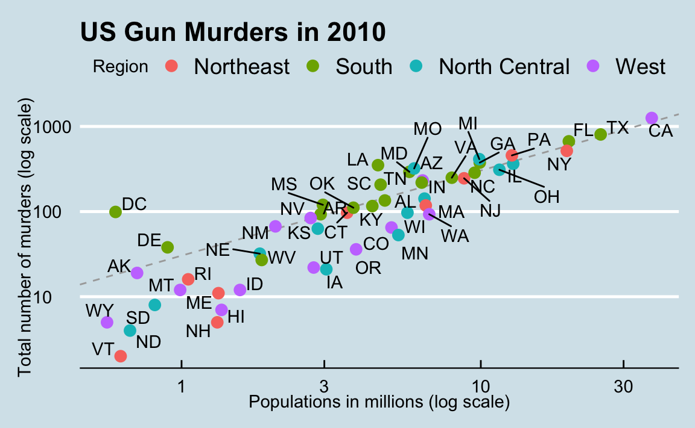

Capítulo 6 Introducción a la visualización de datos
Raras veces es útil mirar los números y las cadenas de caracteres que definen un set de datos. Para confirmar esto, impriman y observen la tabla de datos de asesinatos de Estados Unidos:
library(dslabs)
data(murders)
head(murders)
#> state abb region population total
#> 1 Alabama AL South 4779736 135
#> 2 Alaska AK West 710231 19
#> 3 Arizona AZ West 6392017 232
#> 4 Arkansas AR South 2915918 93
#> 5 California CA West 37253956 1257
#> 6 Colorado CO West 5029196 65¿Qué aprenden de ver esta tabla? ¿Cuán rápido pueden determinar qué estados tienen las poblaciones más grandes? ¿Qué estados tienen las más pequeñas? ¿Cuán grande es un estado típico? ¿Existe una relación entre el tamaño de la población y los asesinatos totales? ¿Cómo varían las tasas de homicidios entre las regiones del país? Para la mayoría de cerebros humanos, es bastante difícil extraer esta información simplemente mirando los números. Por el contrario, las respuestas a todas las preguntas anteriores están fácilmente disponibles al examinar este gráfico:

Esto nos recuerda del dicho “una imagen vale más que mil palabras”. La visualización de datos ofrece una forma poderosa de comunicar hallazgos basados en datos. En algunos casos, la visualización es tan convincente que no requiere un análisis de seguimiento.
La creciente disponibilidad de sets de datos informativos y de herramientas de software ha conducido a una mayor dependencia de la visualizacion de datos en muchas industrias, academias y gobiernos. Un ejemplo destacado son las organizaciones de noticias, que están adoptando cada vez más el periodismo de datos e incluyendo infografías eficaces como parte de sus informes.
Un ejemplo particularmente efectivo es un artículo del Wall Street Journal19 que muestra datos relacionados con el impacto de las vacunas en la lucha contra las enfermedades infecciosas. Uno de los gráficos muestra los casos de sarampión por estado de EE. UU. a lo largo de los años con una línea vertical que indica cuándo se introdujo la vacuna.

Otro ejemplo notable proviene de un gráfico del New York Times20 que resume los resultados de los exámenes de los Regentes de la ciudad de Nueva York. Según el artículo21, estas puntuaciones se recopilan por varias razones, incluso para determinar si un estudiante se gradúa de escuela secundaria. En la ciudad de Nueva York, se necesita una puntuación mínima de 65 para aprobar. La distribución de las puntuaciones de las pruebas nos obliga a notar algo un poco problemático:

La puntuación de prueba más común es la calificación mínima para aprobar, con muy pocas puntuaciones justo por debajo del umbral. Este resultado inesperado es consistente con el aumento de la puntuación de los estudiantes cerca de aprobar, pero sin obtener el mínimo de 65.
Este es un ejemplo de cómo la visualización de datos puede conducir a descubrimientos que de otro modo se perderían si simplemente sometiéramos los datos a una serie de herramientas o procedimientos de análisis de datos. La visualización de datos es la herramienta más efectiva de lo que llamamos el análisis exploratorio de datos, o EDA por sus siglas en inglés. John W. Tukey22, considerado el padre de EDA, una vez dijo:
“El mayor valor de una imagen es cuando nos obliga a notar lo que nunca esperábamos ver.”
Muchas de las herramientas de análisis de datos más ampliamente utilizadas fueron inicialmente desarolladas gracias al EDA. Este es quizás la parte más importante del análisis de datos, pero a menudo se ignora.
La visualización de datos ahora también es omnipresente en organizaciones filantrópicas y educativas. En las conferencias “New Insights on Poverty”23 y “The Best Stats You’ve Never Seen”24, Hans Rosling nos obliga a notar lo inesperado con una serie de gráficos relacionados con la salud y la economía mundial. En sus videos, Rosling usa unos gráficos animados para demostrar cómo el mundo está cambiando y cómo las viejas narrativas ya no son ciertas.

También es importante recordar que las equivocaciones, los prejuicios, los errores sistemáticos y otros problemas inesperados a menudo conducen a datos que se deben analizar con cuidado. No descubrir estos problemas puede dar lugar a análisis defectuosos y descubrimientos falsos. Como ejemplo, consideren que los instrumentos de medición a veces fallan y que la mayoría de los procedimientos de análisis de datos no están diseñados para detectarlos. Sin embargo, estos procedimientos aún le darán una respuesta. El hecho de que puede ser difícil, o hasta imposible, notar un error solo a partir de los resultados que se reportan hace que la visualización de datos sea particularmente importante.
En esta parte del libro, aprenderemos los conceptos básicos de la visualización de datos y del análisis exploratorio de datos mediante el uso de tres ejemplos motivantes. Usaremos el paquete ggplot2 para codificar. Para aprender los conceptos básicos, utilizaremos un ejemplo algo artificial: alturas reportadas por estudiantes. Luego discutiremos dos ejemplos mencionados anteriormente: 1) la salud y economía mundial y 2) las tendencias de enfermedades infecciosas en Estados Unidos.
Por supuesto, la visualización de datos es mucho más de lo que cubrimos aquí. A continuación ofrecemos unas referencias para los que quieran aprender más:
- ER Tufte (1983) The visual display of quantitative information. Graphics Press.
- ER Tufte (1990) Envisioning information. Graphics Press.
- ER Tufte (1997) Visual explanations. Graphics Press.
- WS Cleveland (1993) Visualizing data. Hobart Press.
- WS Cleveland (1994) The elements of graphing data. CRC Press.
- A Gelman, C Pasarica, R Dodhia (2002) Let’s practice what we preach: Turning tables into graphs. The American Statistician 56:121-130.
- NB Robbins (2004) Creating more effective graphs. Wiley.
- A Cairo (2013) The functional art: An introduction to information graphics and visualization. New Riders.
- N Yau (2013) Data points: Visualization that means something. Wiley.
Finalmente, no discutiremos gráficos interactivos, un tema demasiado avanzado para este libro. Abajo incluímos algunos recursos útiles para aquellos interesados en aprender más sobre ese tema:
http://graphics.wsj.com/infectious-diseases-and-vaccines/?mc_cid=711ddeb86e↩︎
http://graphics8.nytimes.com/images/2011/02/19/nyregion/19schoolsch/19schoolsch-popup.gif↩︎
https://www.nytimes.com/2011/02/19/nyregion/19schools.html↩︎
https://www.ted.com/talks/hans_rosling_reveals_new_insights_on_poverty?language=en↩︎
https://www.ted.com/talks/hans_rosling_shows_the_best_stats_you_ve_ever_seen↩︎
{kind=link}